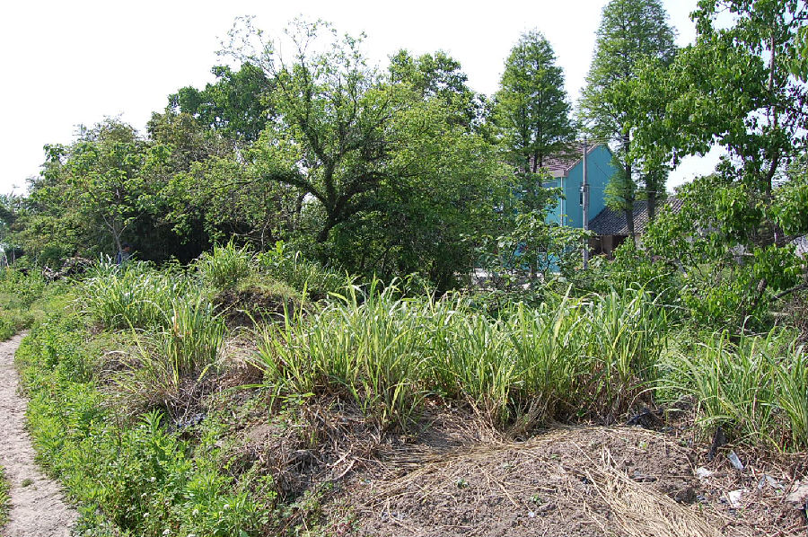

嘉兴市文物保护网 · 市级文物保护点 · 2020-11-09 · 原文

五圣浜遗存位于嘉兴市南湖区大桥镇胥山村28组，遗址平面呈不规则梯形，面积较大，占地约10000平方米，高出四面水田0.4至1.8米。农田开挖沟渠时发现陶片，表面可采集到印纹陶片，有长方格纹、回纹等，还有丁字形鼎足，凹凿形鼎足及黑皮陶壶残片等。该遗存较好的反映了新石器时代崧泽、良渚至马桥时期的文化面貌，有较高的历史和科学价值。2002年公布为嘉兴市文物保护点。